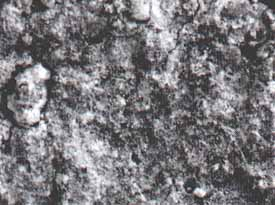
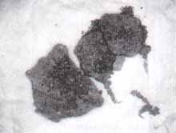
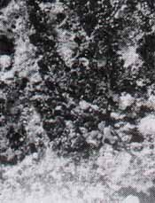
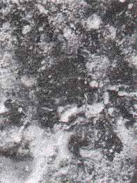

Fig. 17. Echantillon P1a, magnification = 6,4
|  |
The SNEAP laboratory in Boussens is often entrusted by GEPAN with preliminary analyses aimed at detecting
and identifying organic or mineral items or elements in samples. In this particular case the laboratory conducted
two types of analyses, the first one on the black area identified previously, the second one on the striations of
sample P1b.
The analysis disclosed that the sample contained none of the organic compounds that are characteristic of
combustion engines using hydrocarbons. An electronic microscopic analysis of the same P1b sample showed the
presence of Iron overlaid over limestone rocks in the form of striations about one micron thick. This iron element
was not accompanied by chromium, manganese or nickel as commonly found in steel. The technique employed here
(using a CAMECA probe) did not allow the investigators to distinguish between free iron or iron oxyde.
Fig. 18. Echantillon P1b, magnification = 1
|  |
Fig. 19. Echantillon P1b, magnification = 5
|  |
Fig. 20. Echantillon P1b, magnification = 13
|  |